<title>Ask Button Options</title>
<meta name="claude:viewport-fit-sides" content="cover">
<link rel="preconnect" href="https://fonts.googleapis.com">
<link rel="preconnect" href="https://fonts.gstatic.com" crossorigin>
<link rel="stylesheet" href="https://fonts.googleapis.com/css2?family=DM+Sans:ital,opsz,wght@0,9..40,300;0,9..40,400;0,9..40,500;1,9..40,400&family=Lora:ital,wght@0,400;0,500;1,400;1,500&family=Space+Mono:wght@400;700&display=swap">
<style>
/* Florin Health, DESIGN.md v1.1. The six brand colours are the only literal colours; everything else derives from them.
   This page: six ways to draw Ask about this, each on two real Insights cards. The page's tokens are the prototype
   page's; --pic-l and --pic-d pick the pictures that match the page's theme. */
:root {
  --forest: #00352B; --cream: #F9F7F2; --ray: #EEFFA3; --plum: #4F2641; --teal: #396E7C; --gold: #D1BD7E;
  --raydeep: oklch(from var(--ray) calc(l - .43) c h);
  --sans: "DM Sans", system-ui, -apple-system, "Segoe UI", Helvetica, Arial, sans-serif;
  --serif: "Lora", Georgia, "Times New Roman", serif;
  --mono: "Space Mono", ui-monospace, SFMono-Regular, Menlo, Consolas, monospace;
  --bg: oklch(from var(--cream) calc(l - .04) calc(c * 1.1) h);
  --panel: oklch(from var(--cream) calc(l + .024) calc(c * .3) h);
  --ink: var(--forest);
  --ink-2: oklch(from var(--forest) calc(l + .12) c h);
  --ink-3: oklch(from var(--forest) calc(l + .22) calc(c * .7) h); /* 4.5:1 or more on the page ground and the panels, as the prototype's page */
  --line: color-mix(in srgb, var(--forest) 14%, transparent);
  --line-2: color-mix(in srgb, var(--forest) 8%, transparent);
  --signal: var(--raydeep);
  --pic-l: block; --pic-d: none;
  color-scheme: light;
}
@media (prefers-color-scheme: dark) {
  :root:not([data-theme="light"]) {
    --bg: oklch(from var(--forest) calc(l - .085) calc(c * .7) h);
    --panel: oklch(from var(--forest) calc(l - .02) calc(c * .85) h);
    --ink: var(--cream);
    --ink-2: oklch(from var(--cream) calc(l - .14) calc(c * 1.4) h);
    --ink-3: oklch(from var(--cream) calc(l - .32) calc(c * 1.2) h);
    --line: color-mix(in srgb, var(--cream) 16%, transparent);
    --line-2: color-mix(in srgb, var(--cream) 8%, transparent);
    --signal: var(--ray);
    --pic-l: none; --pic-d: block;
    color-scheme: dark;
  }
}
:root[data-theme="dark"] {
  --bg: oklch(from var(--forest) calc(l - .085) calc(c * .7) h);
  --panel: oklch(from var(--forest) calc(l - .02) calc(c * .85) h);
  --ink: var(--cream);
  --ink-2: oklch(from var(--cream) calc(l - .14) calc(c * 1.4) h);
  --ink-3: oklch(from var(--cream) calc(l - .32) calc(c * 1.2) h);
  --line: color-mix(in srgb, var(--cream) 16%, transparent);
  --line-2: color-mix(in srgb, var(--cream) 8%, transparent);
  --signal: var(--ray);
  --pic-l: none; --pic-d: block;
  color-scheme: dark;
}
html, body { background: var(--bg); color: var(--ink); }
body { margin: 0; font-family: var(--sans); -webkit-font-smoothing: antialiased; }
</style>
<link rel="stylesheet" href="css/ask-options.css">
<main class="ao" id="ao">
  <header class="ao-head">
    <div class="ao-head-t">
      <p class="ao-k">Florin app refresh · Design system · Nov 7</p>
      <h1>Ask about this, six ways</h1>
      <p class="ao-lede">Will: <q>I like the Ask about this inside rather than below a card. I don't know if we need as big a bubble every time.</q> Here is the button drawn six ways, each on the same two Insights cards: Sarah's last 30 days, from the prototype at phone width.</p>
    </div>
    <div class="ao-pick">
      <p class="ao-rec1"><b>We recommend B, Compact.</b></p>
      <p><b>To pick one,</b> reply with its letter, A to F. Or open <a href="https://claude.ai/artifact/8Y7riZMHdzy5BqV4HXzeFB" target="_blank" rel="noopener">the demo</a> and set <b>Ask button</b> under View on the left bar (in Toggles on a phone): every Ask about this redraws in that style, on Insights in every data style, the detail pages and Easy.</p>
      <p class="ao-keep">Every option keeps the Ask token, and Ray wherever there is a fill, on purpose. They are Ask Florin's mark on the Ask tab, in the chat and on every way into it, so even the smallest button still reads as Ask Florin.</p>
    </div>
  </header>

  <div class="ao-ctl" role="group" aria-labelledby="ao-ctl-l">
    <span class="ao-ctl-l" id="ao-ctl-l">Pictures</span>
    <div class="ao-seg">
      <button type="button" id="ao-pic-auto" data-pic="" aria-pressed="true">This page's theme</button>
      <button type="button" id="ao-pic-light" data-pic="light" aria-pressed="false">Light</button>
      <button type="button" id="ao-pic-dark" data-pic="dark" aria-pressed="false">Dark</button>
    </div>
    <p class="ao-ctl-n">The app on a 390 phone, Will's picks view.</p>
  </div>

  <div class="ao-opts">
  <section class="ao-opt" id="opt-a" aria-labelledby="opt-a-h">
    <h2 class="ao-opt-h" id="opt-a-h"><span class="ao-n" aria-hidden="true">A</span><span>A, Pill</span><span class="ao-tag ao-tag--now">In the app now</span></h2>
    <div class="ao-figs"><figure class="ao-fig">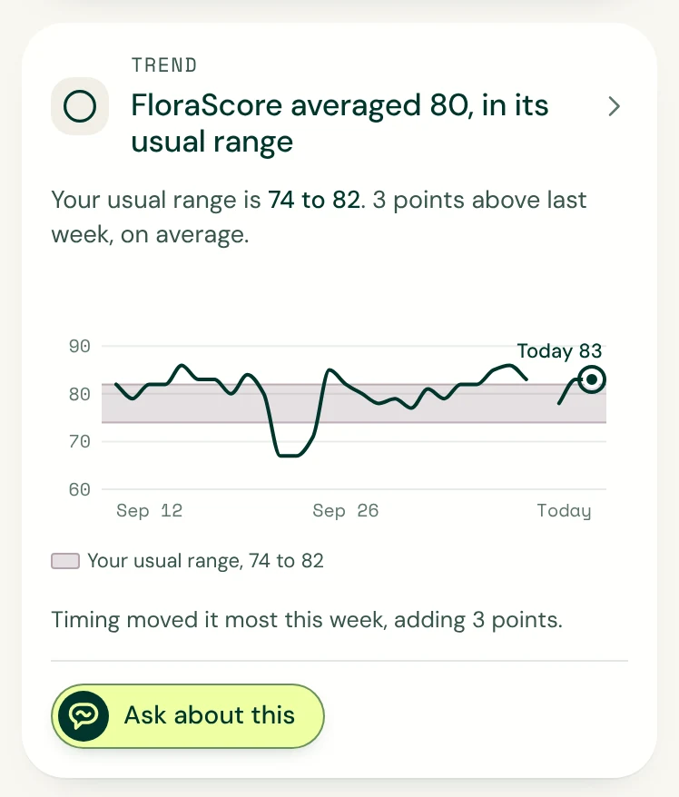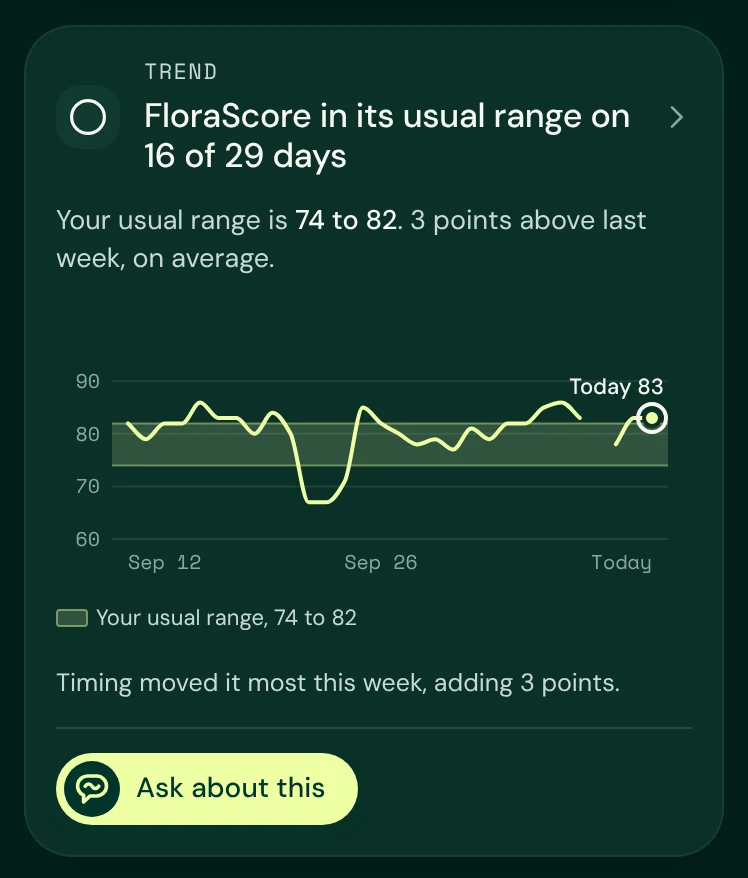<figcaption>FloraScore trend, a Florin charts card</figcaption></figure><figure class="ao-fig">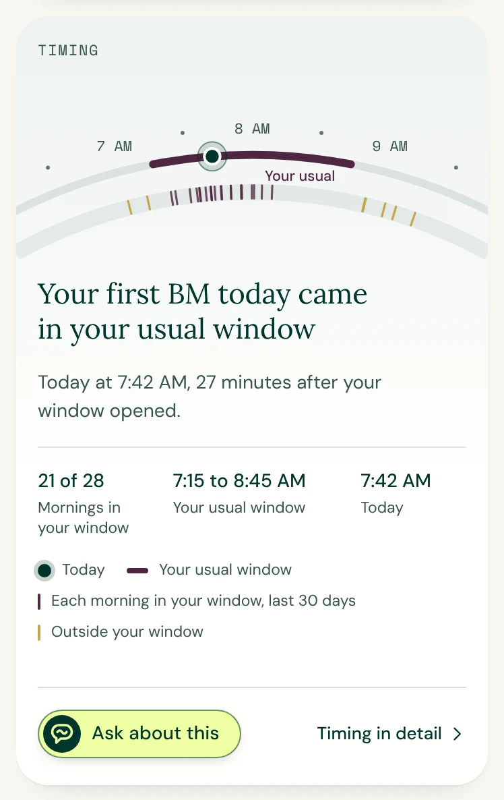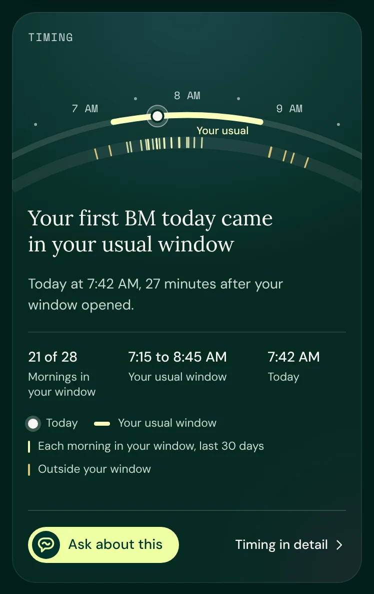<figcaption>Timing, Oura's card (Will's pick)</figcaption></figure></div>
    <dl>
      <div><dt>What it is</dt><dd>The Ray pill at the card's foot: the token, then Ask about this.</dd></div>
      <div><dt>Why do it</dt><dd>It is the clearest way into Ask, and it is what the app has now.</dd></div>
      <div><dt>Why not</dt><dd>Repeated on every card, it is the biggest thing on the screen after the charts, and it competes with them.</dd></div>
      <div><dt>The component</dt><dd class="ao-spec">Ray pill 36px tall, token 28px, words 14px medium in Forest. In light a Forest and Ray hairline edges it at 3:1. Target 52px tall.</dd></div>
    </dl>
  </section>
  <section class="ao-opt" id="opt-b" data-rec aria-labelledby="opt-b-h">
    <h2 class="ao-opt-h" id="opt-b-h"><span class="ao-n" aria-hidden="true">B</span><span>B, Compact</span><span class="ao-tag">Recommended</span></h2>
    <div class="ao-figs"><figure class="ao-fig">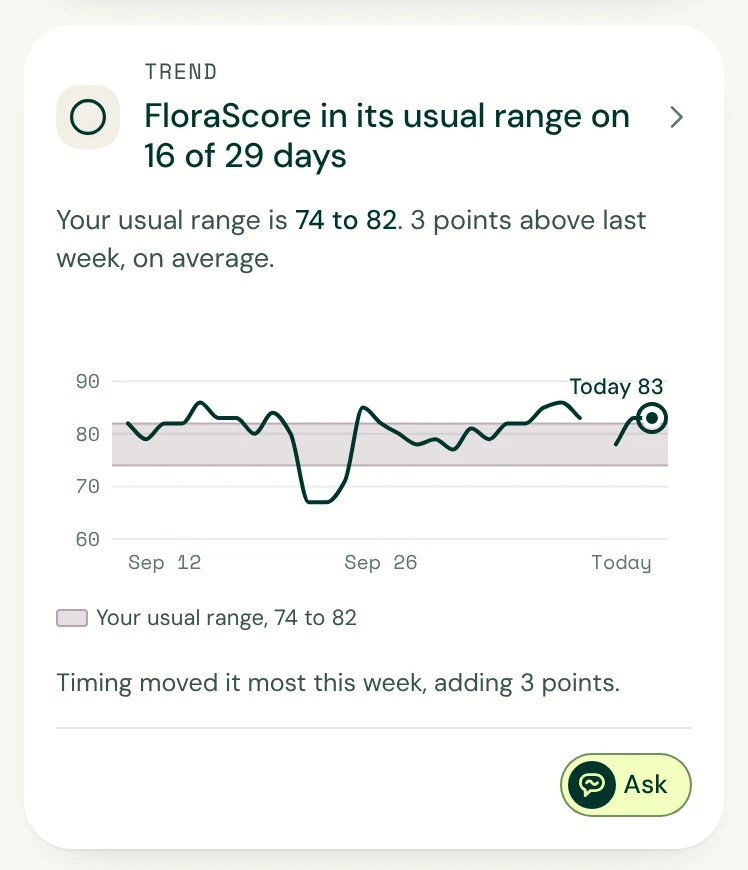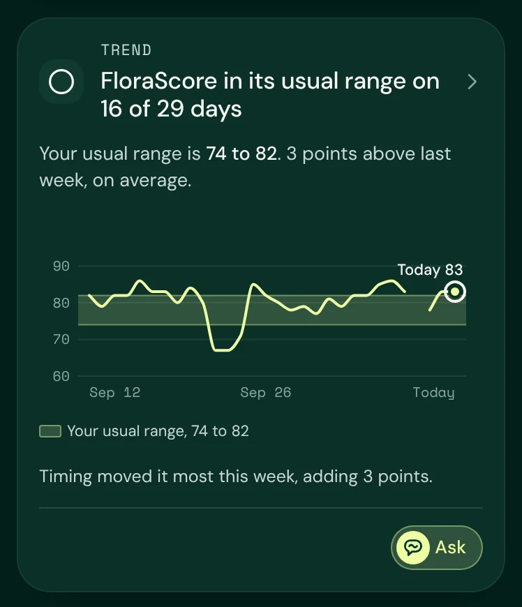<figcaption>FloraScore trend, a Florin charts card</figcaption></figure><figure class="ao-fig">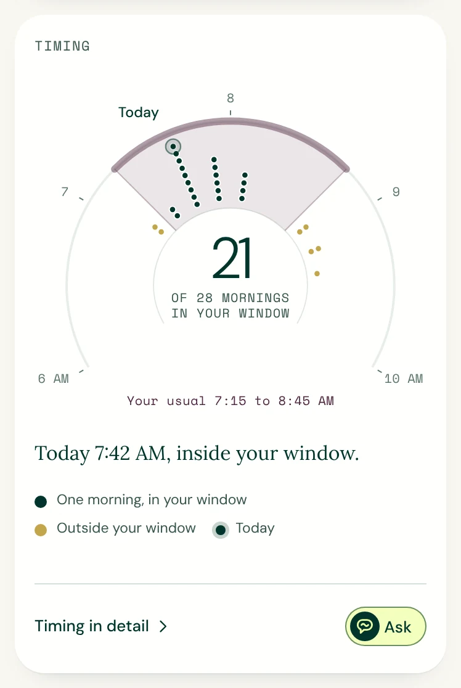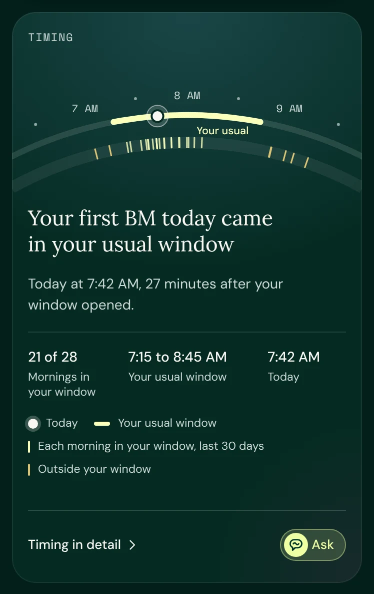<figcaption>Timing, Oura's card (Will's pick)</figcaption></figure></div>
    <dl>
      <div><dt>What it is</dt><dd>A small Ray pill in the card's corner with the token and one word, Ask.</dd></div>
      <div><dt>Why do it</dt><dd>It keeps Ask Florin's Ray mark easy to spot at about half the pill's width, in the same corner on every card.</dd></div>
      <div><dt>Why not</dt><dd>Ask on its own doesn't say about what. The card's name is only in what a screen reader says.</dd></div>
      <div><dt>The component</dt><dd class="ao-spec">Pill 32px tall, token 24px, Ask 13px medium. Light: Ray over the card at 70%, edged at 3:1. Dark: Ray at 16% with Ray words. Target 48px tall.</dd></div>
    </dl>
  </section>
  <section class="ao-opt" id="opt-c" aria-labelledby="opt-c-h">
    <h2 class="ao-opt-h" id="opt-c-h"><span class="ao-n" aria-hidden="true">C</span><span>C, Link</span></h2>
    <div class="ao-figs"><figure class="ao-fig">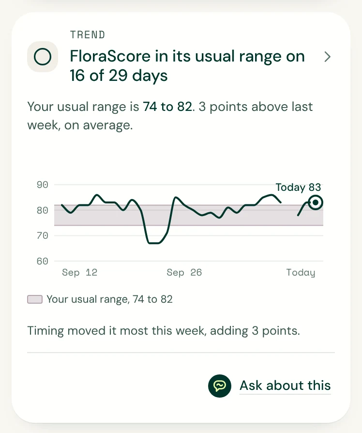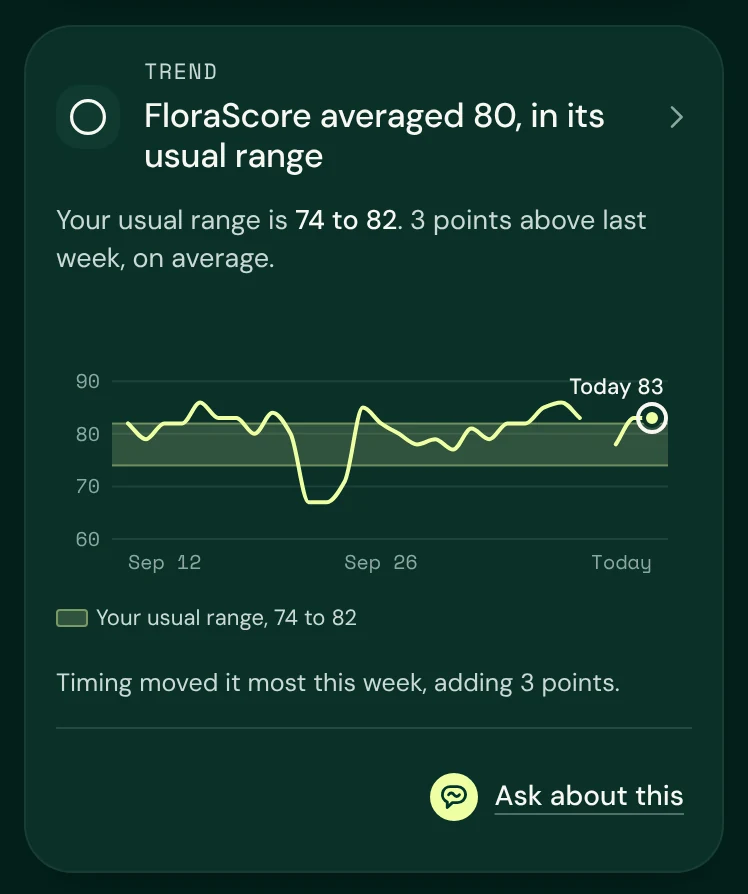<figcaption>FloraScore trend, a Florin charts card</figcaption></figure><figure class="ao-fig">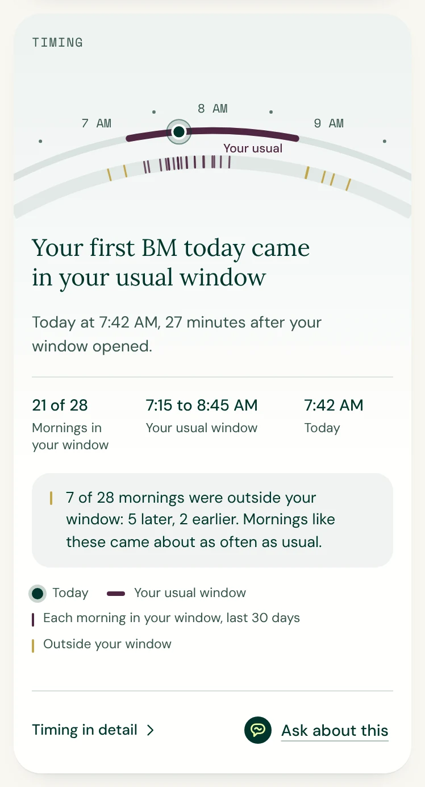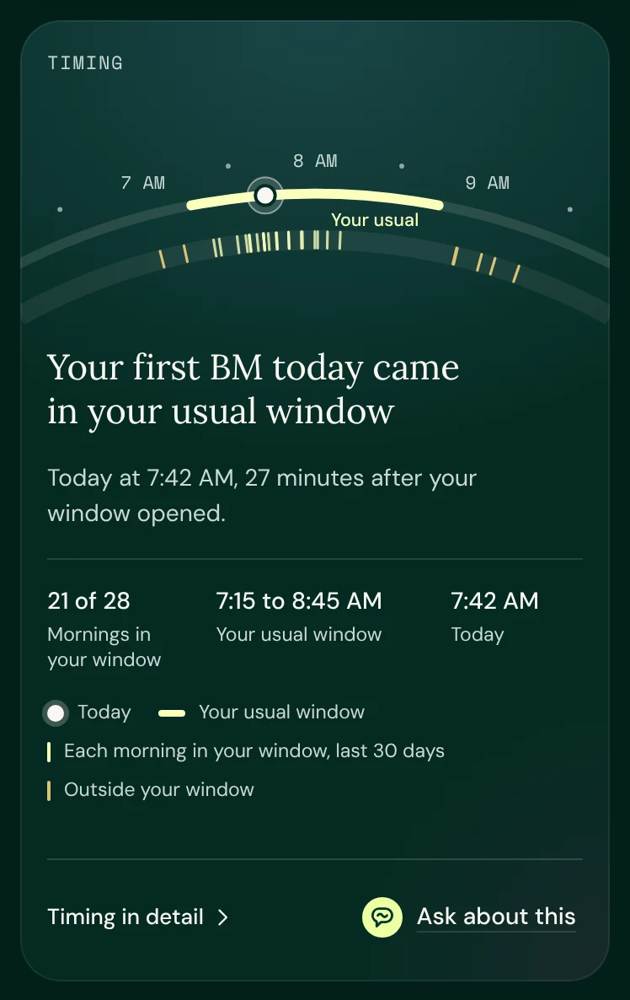<figcaption>Timing, Oura's card (Will's pick)</figcaption></figure></div>
    <dl>
      <div><dt>What it is</dt><dd>The token and Ask about this in Ink, no fill, at the card's corner.</dd></div>
      <div><dt>Why do it</dt><dd>It is the quietest option that still names the action, so the chart stays the loudest thing on the card.</dd></div>
      <div><dt>Why not</dt><dd>Without Ray around it, it reads like any other link, and on the data-style cards it sits close to the detail link.</dd></div>
      <div><dt>The component</dt><dd class="ao-spec">Row 44px tall, token 24px, words 14px medium in Ink with a hairline underline that darkens on hover.</dd></div>
    </dl>
  </section>
  <section class="ao-opt" id="opt-d" aria-labelledby="opt-d-h">
    <h2 class="ao-opt-h" id="opt-d-h"><span class="ao-n" aria-hidden="true">D</span><span>D, Token</span></h2>
    <div class="ao-figs"><figure class="ao-fig">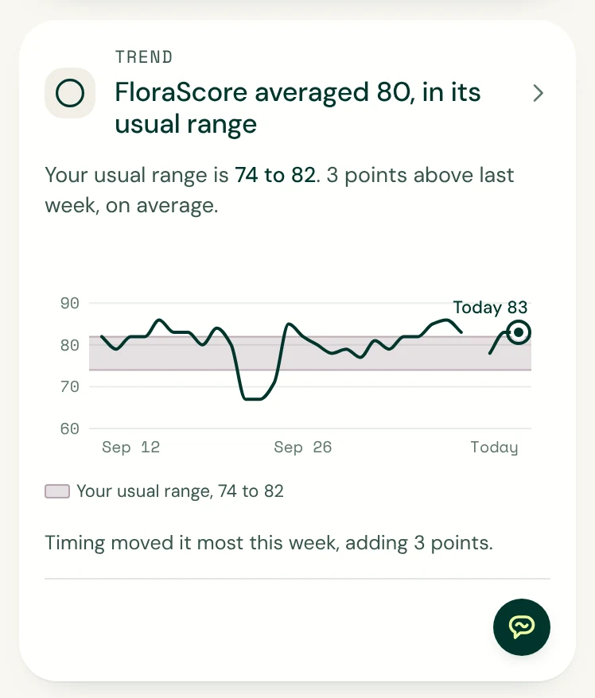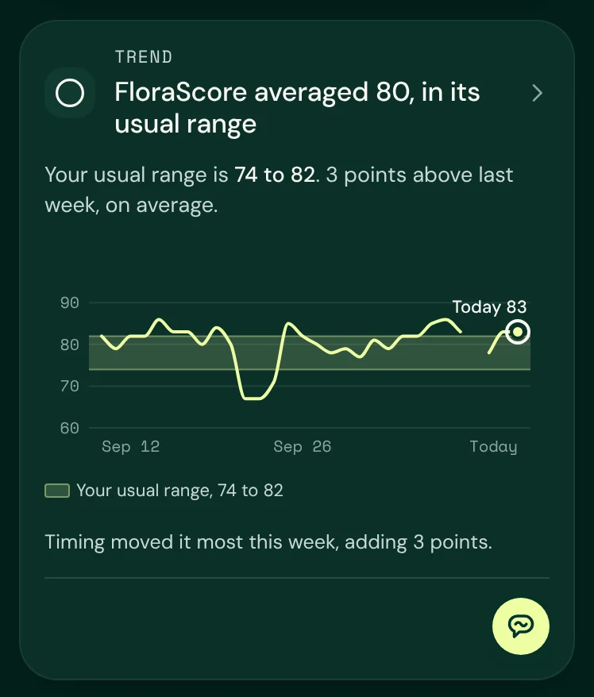<figcaption>FloraScore trend, a Florin charts card</figcaption></figure><figure class="ao-fig">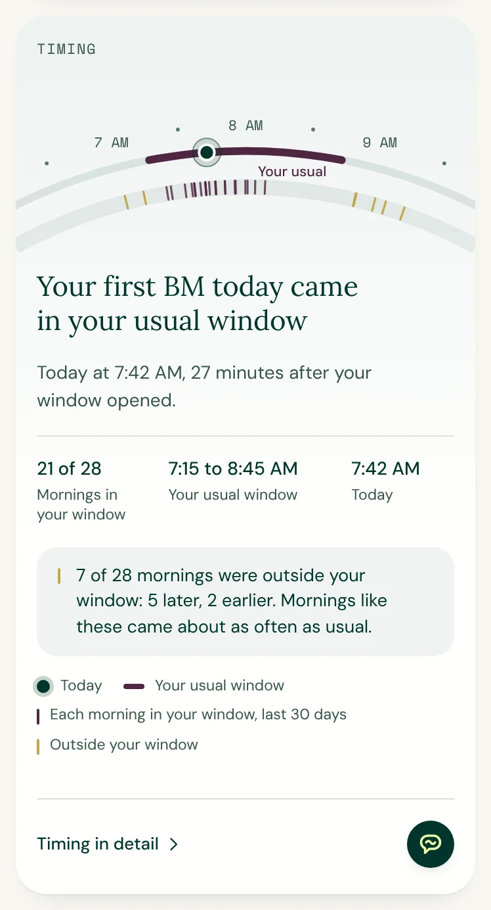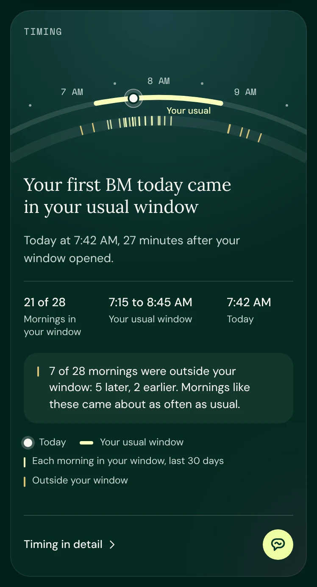<figcaption>Timing, Oura's card (Will's pick)</figcaption></figure></div>
    <dl>
      <div><dt>What it is</dt><dd>The Ask token alone in the card's corner. Its name says Ask about this and the card, and keyboard focus shows the words beside it.</dd></div>
      <div><dt>Why do it</dt><dd>It is the smallest, like the chat button on a widget, and the Ask tab already teaches the token.</dd></div>
      <div><dt>Why not</dt><dd>A mark with no words is the easiest to miss, and someone new to the app may not know what it opens.</dd></div>
      <div><dt>The component</dt><dd class="ao-spec">Token 36px on a 44px target. On focus it opens into a Ray pill with Ask about this.</dd></div>
    </dl>
  </section>
  <section class="ao-opt" id="opt-e" aria-labelledby="opt-e-h">
    <h2 class="ao-opt-h" id="opt-e-h"><span class="ao-n" aria-hidden="true">E</span><span>E, Question</span></h2>
    <div class="ao-figs"><figure class="ao-fig">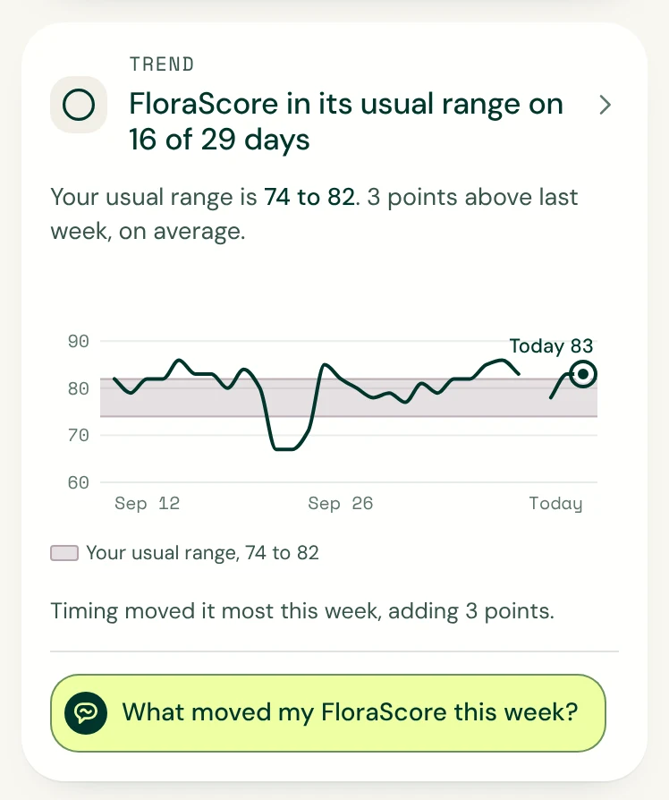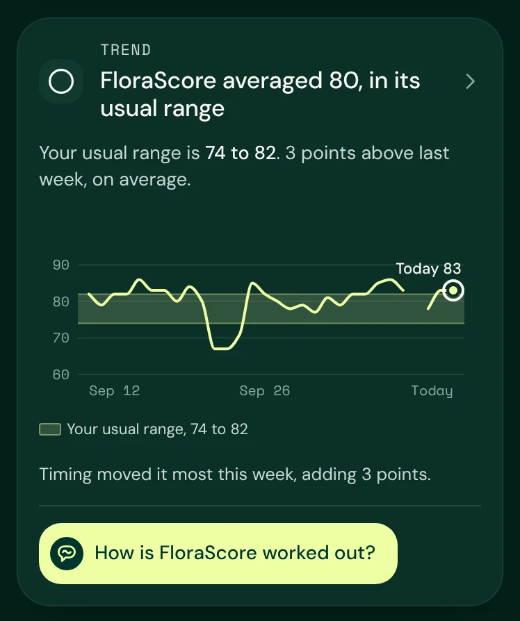<figcaption>FloraScore trend, a Florin charts card</figcaption></figure><figure class="ao-fig">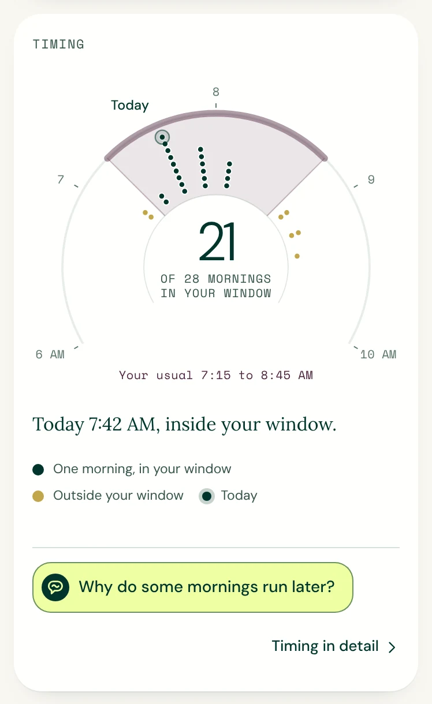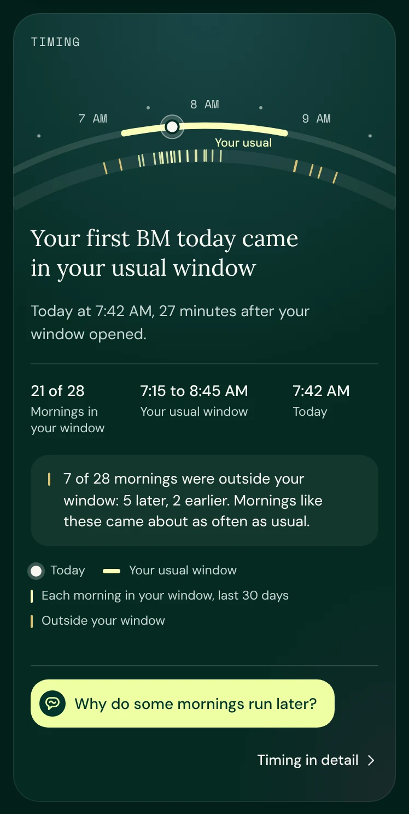<figcaption>Timing, Oura's card (Will's pick)</figcaption></figure></div>
    <dl>
      <div><dt>What it is</dt><dd>The token and the card's own first question, the one that lands in Ask's box when you tap it.</dd></div>
      <div><dt>Why do it</dt><dd>It says what you get by tapping, and the question is worked out from the person's own logs, so it invites a tap more than a label does.</dd></div>
      <div><dt>Why not</dt><dd>It is longer than the pill and often runs to two lines, and a question on every card turns the page into a list of questions.</dd></div>
      <div><dt>The component</dt><dd class="ao-spec">Chip 44px or taller, 16px corners, token 24px, the question 14px medium in Forest on Ray. It wraps; it never cuts the question short.</dd></div>
    </dl>
  </section>
  <section class="ao-opt" id="opt-f" aria-labelledby="opt-f-h">
    <h2 class="ao-opt-h" id="opt-f-h"><span class="ao-n" aria-hidden="true">F</span><span>F, Bar</span></h2>
    <div class="ao-figs"><figure class="ao-fig">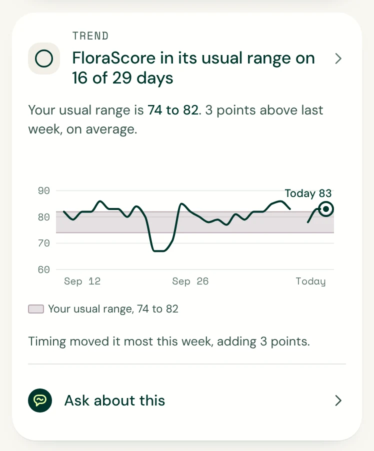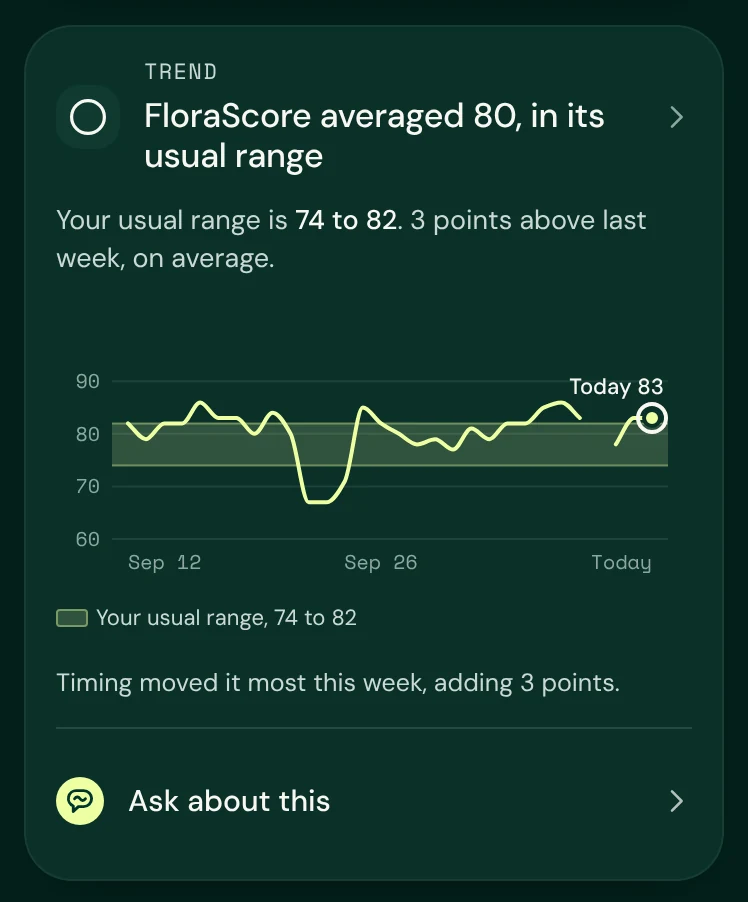<figcaption>FloraScore trend, a Florin charts card</figcaption></figure><figure class="ao-fig">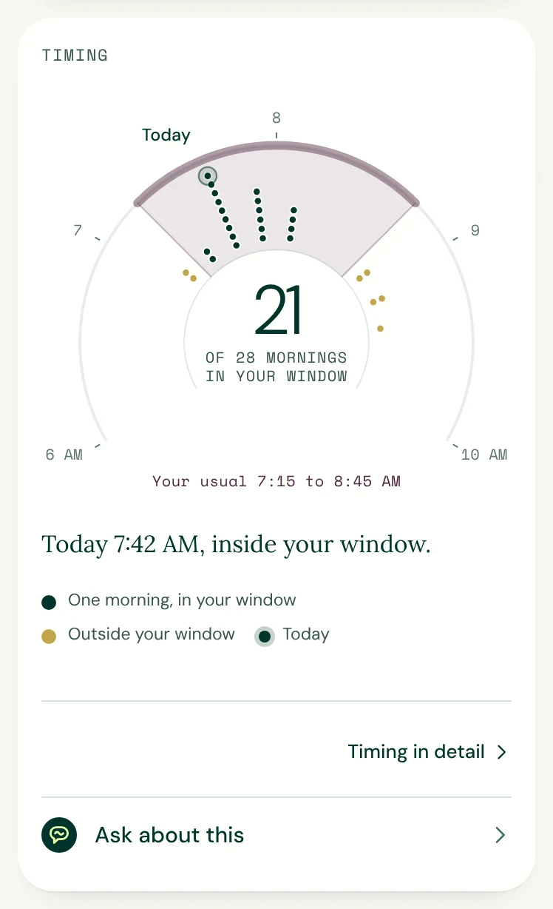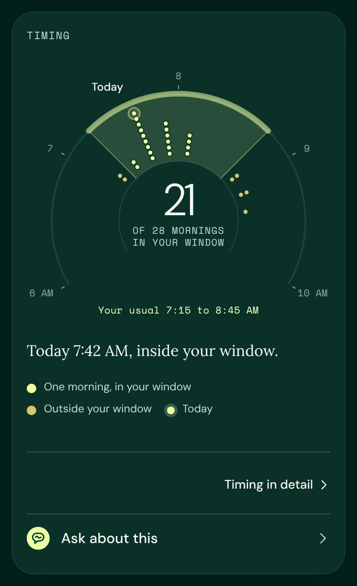<figcaption>Timing, Oura's card (Will's pick)</figcaption></figure></div>
    <dl>
      <div><dt>What it is</dt><dd>A slim row across the foot of the card, a line above it, with the token, Ask about this and a chevron.</dd></div>
      <div><dt>Why do it</dt><dd>It is plainly part of the card, has the biggest target, and lines up the same way on every card.</dd></div>
      <div><dt>Why not</dt><dd>With no fill it gives up Ray, and on the data-style cards it stacks over the detail link, so the foot has two rows.</dd></div>
      <div><dt>The component</dt><dd class="ao-spec">Row 48px tall across the card, token 24px, words 15px medium in Ink, chevron 16px that moves 4px on hover.</dd></div>
    </dl>
  </section>
  </div>

  <section class="ao-rec" aria-labelledby="ao-rec-h">
    <p class="ao-k" id="ao-rec-h">What we recommend</p>
    <p class="ao-rec-say"><b>We recommend B, Compact.</b> It answers Will's point directly: the Ray mark stays, at about half the size, in the same corner of every card, and a screen reader still hears which card it asks about.</p>
    <p class="ao-k">What all six share</p>
    <ul class="ao-all">
      <li>The Ask token first, Forest with a Ray glyph on light grounds and Ray with a Forest glyph on dark.</li>
      <li>A target of 44px or more, however small the drawing.</li>
      <li>A name that starts with Ask and says the card, such as Ask about this: Timing.</li>
      <li>On Free, a lock in the token, and a tap opens Florin membership, as today.</li>
      <li>Pressed, it shrinks a little; with reduced motion it doesn't. Keyboard focus is the app's Teal ring.</li>
    </ul>
    <div class="ao-rec-open">
      <p class="ao-k">Still open</p>
      <p class="ao-rec-p">Should the FloraScore card alone carry E, its own question, as the one invitation to start a chat on Insights?</p>
    </div>
  </section>

  <footer class="ao-foot">
    <p>Pictures: the prototype's Insights tab, Sarah with 12 weeks of logs, Florin membership, 30 days, Will's picks view, at 390 wide.</p>
    <p>Prototype only. Not for patients.</p>
  </footer>
</main>
<script>
(function () {
  var root = document.getElementById("ao"), bs = root.querySelectorAll("[data-pic]");
  function show(v) {
    if (v) root.setAttribute("data-pic", v); else root.removeAttribute("data-pic");
    bs.forEach(function (b) { b.setAttribute("aria-pressed", String(b.getAttribute("data-pic") === (v || ""))); });
  }
  var saved = "";
  try { saved = localStorage.getItem("florin-ask-options:pic") || ""; } catch (e) { saved = ""; }
  show(saved === "light" || saved === "dark" ? saved : "");
  bs.forEach(function (b) { b.addEventListener("click", function () { var v = b.getAttribute("data-pic"); show(v); try { localStorage.setItem("florin-ask-options:pic", v); } catch (e) { /* private window: fine */ } }); });
})();
</script>
